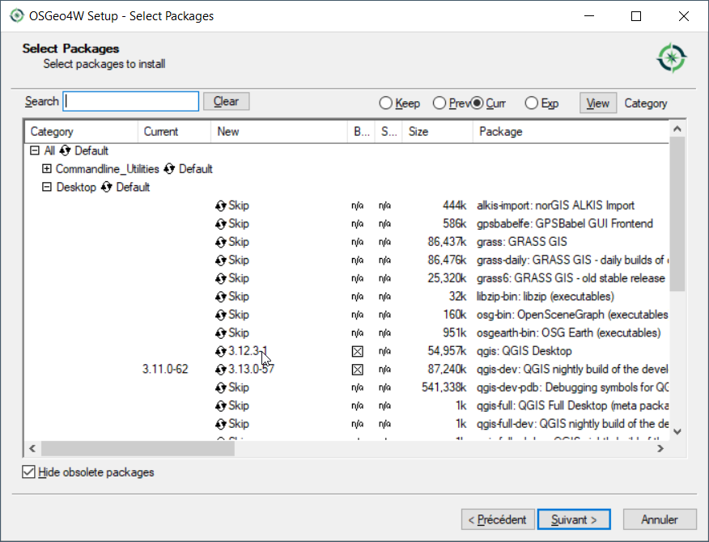

Installation¶
Librairies nécessaires en supplément de l’installation de QGis¶
LAMIA est un module complémentaire pour Qgis 3.10 et supérieures se manifestant sous la forme d’un panneau supplémentaire dans l’application.
Il s’agit donc dans un premier temps d’installer QGis 3.10.
Pour windows, nous vous recommendons l’installateur osgeo4w. Cette installateur permet également l’installation des libraiies complémentaires à QGIs permettant le fonctionnement de Lamia.
Sous linux, une installation via apt-get est recommendée.
Pour installer LAMIA, les bibliothèques suivantes sont nécessaires :
pyqgis
Numpy
Matplotlib
Networkx
Xlrd (excel reader)
Pillow
Ces librairies sont installables à partir de l’installateur osgeo4w pour windows.
Installation de QGis et des librairies sous windows¶
Pour les employés d’Artelia¶
Il suffit juste d’installer QGis via l’Arteliastore. L’installation comprend toutes les dépendnaces nécessaires.
Pour les autres…¶
Télécharger l’installateur osgeo4w.exe sur le site de qgis (ici) et le lancer.
Choisir « Advanced Install »
Suivre les instructions (configuration proxy notamment) jusqu” à cette fenêtre :
4. Dans « Desktop » cliquer sur la ligne qgis - la colonne « new » passe de « skeep » à un numero de version Ceci indique à l’installateur d’installer qgis.
Dans « Libs », installer de la même façon les librairies citées plus haut:
Numpy
Pandas
Matplotlib
Networkx
Xlrd (excel reader)
Pillow
Enfin cliquer sur « Suivant » et attendre la fin de l’installation

{kind=link}
{kind=link}
{kind=link}
{kind=link}
{kind=link}